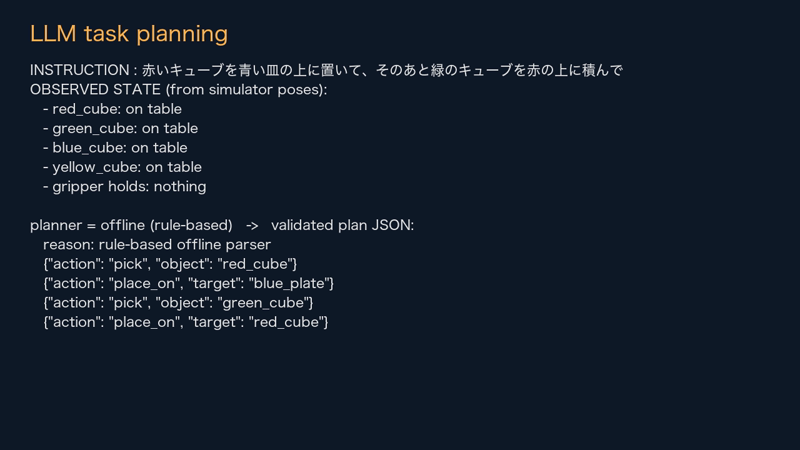
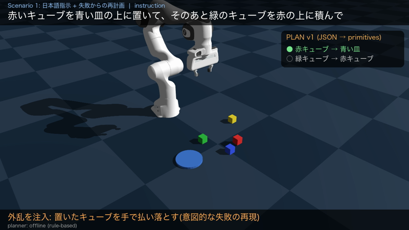
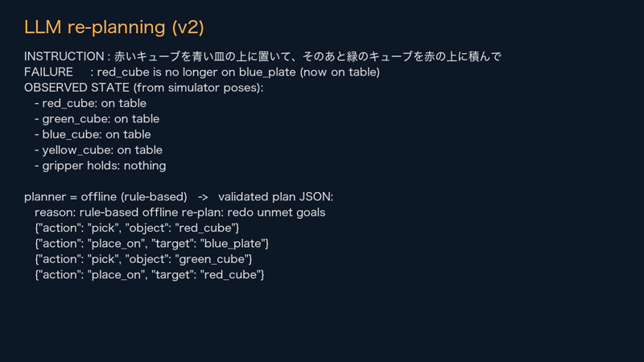
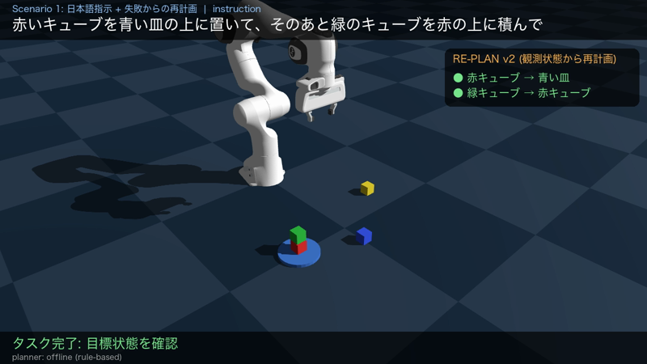
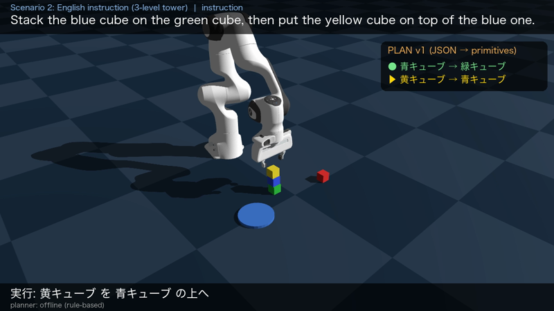

「赤いキューブを青い皿の上に置いて、そのあと緑のキューブを赤の上に積んで」のような日本語・英語の指示を、LLMが
pick(object) / place_on(target) のJSONプランに変換し、Genesis上のFranka Pandaアームが逆運動学(IK)と摩擦把持で実行する。
各動作のあとシミュレータの物体姿勢から「何が何の上にあるか」を観測して成否を判定し、失敗や外乱があれば観測状態と失敗理由をLLMに返して再計画する。
LLMによるタスク分解は、そのまま実行すると「存在しない物体を指す」「下に物がある箱を掴む」などの無効な計画や、実行中の失敗に弱い。 本課題では (a) 計画をシンボリックに検証してからロボットに渡す、(b) 実行後の観測で失敗を検出し再計画する、という二つの安全網を付けた小さなエージェントを作り、 AIを「推論のみ」で使いながら実機でも重要な信頼性の問題を扱うことを目的とした。実用面では、倉庫の仕分けや家庭での片付けのように、 曖昧な言葉の指示と実行時の失敗の両方に対処する必要がある場面を想定している。
| 工夫 | 内容 |
|---|---|
| 検証付きプランナー | JSONを物体IDと状態遷移で記号実行し、「箱の上に物がある物は掴めない」「すでに載っている物の上には置けない」などを検査。無効な場合は理由をLLMに返して最大3回再生成(planner.py)。 |
| 閉ループ再計画 | 各動作の後と次動作の前に、シミュレータの姿勢から on(obj, support) を導出。達成済みの関係が崩れた(外乱)、掴み損ねた、置けていない場合に、観測状態・元のプラン・失敗理由をLLMに渡して残りの計画を作り直す。 |
| 手内姿勢の補償 | 把持後にキューブとハンドの相対位置を測り、置く位置・高さを補正。3段積みでも崩れにくくなった。 |
| 安定な積み方 | Genesisのソルバのsubstepsを2にして接触を安定化し、グリッパをゆっくり開き垂直に退避して塔の崩壊を防止。 |
| オフライン再現性 | APIキーが無くても、過去のLLM応答キャッシュ→小さなルールベース解析器で同じデモが動く(動画に使用したプランナー名は画面下に常時表示)。 |





| シナリオ | 指示 | 結果 |
|---|---|---|
| 1 (外乱あり) | 赤いキューブを青い皿の上に置いて、そのあと緑のキューブを赤の上に積んで | 1動作目後に赤キューブが落とされたことを検知し、再計画(v2)で復帰して目標達成 |
| 2 | Stack the blue cube on the green cube, then put the yellow cube on top of the blue one. | 3段タワーを1回の計画で完成 |
動画(約80秒)は2シナリオを連続で収録している。GenesisのCPUバックエンド(Apple M3)でデモ全体の計算は1分程度で、リアルタイム性の問題はない。
on 関係を推定する層が必要。pick と place_on のみで、押す・開けるなどは未対応。計画の自由度は物体の積み上げ順に限られる。再現: ./run.sh --demo(詳細はREADME)。使用: Genesis 1.4.4, PyTorch 2.14, Python 3.11。